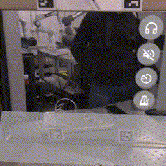

Ho verificato in laboratorio che l'interfaccia funzioni correttamente e che non ci sia lag durante il tempo di caricamento, per fortuna e' andato tutto bene.
Nei prossimi giorni andra' discusso il come proseguire il progetto da qui, per affrontare le questioni non ancora affrontate.
Le questioni da gestire sono (in ordine di importanza):
L'idea per mostrare le istruzioni e' di mostrare in anticipo nel punto da premere un simbolo che segnala il punto, accompagnato da un cerchio attorno ad esso che si rimpicciolisca fino a toccare il simbolo centrale, indicazione del momento in cui la nota dovrebbe essere suonata.
Per indicare il tempo durante il quale mantenere la pressione sulla corda, un alternativa e' di tenere l'indicatore attivo fino al momento di rilascio, dopo il quale l'indicatore sparisce: questo approccio ha il pregio di essere semplice ma il difetto di non indicare in anticipo il momento di rilascio della corda. L'alternativa sarebbe di introdurre un segnale complementare a quello della pressione, ma questo potrebbe non essere ovvio: l'idea che avevo in mente era di mostrare con un cerchio di un altro colore il momento in cui rilasciare il dito, ma questo potrebbe risultare difficile da interpretare visivamente nel caso di note consecutive sullo stesso punto senza pausa tra una e l'altra.
L'aspetto dell'indicatore e' questo (per il momento):
Un altra questione da considerare e' quanto tempo mostrare in avanti, dal momento che un valore troppo piccolo potrebbe risultare in perdita di efficacia nel mostrare le informazioni all'utente, mentre un valore troppo grande risulterebbe nell'inondarlo di informazioni rendendo lo strumento difficile da vedere (nonche' risultando in situazioni difficili da comprendere).